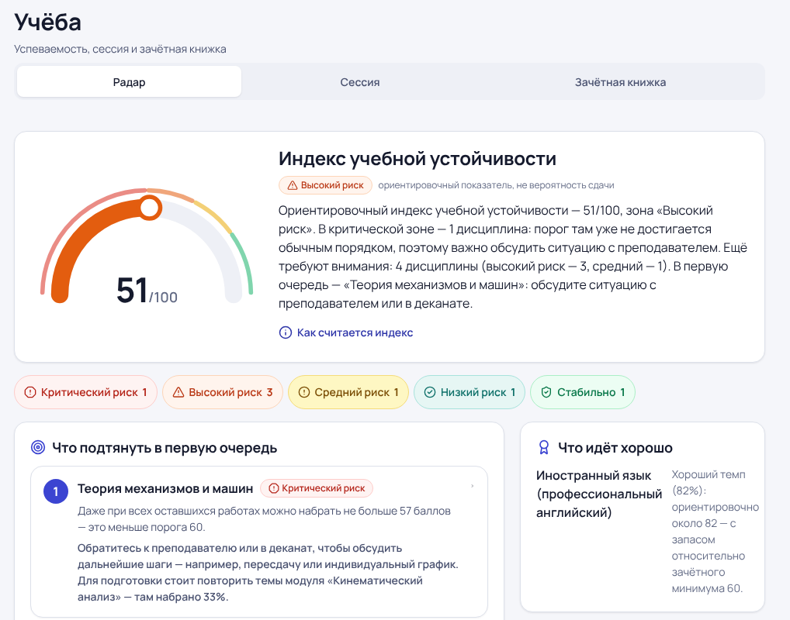

Концепт, созданный для конкурса «Цифровой деканат будущего». Не является официальным сервисом университета. Все ФИО, группы, оценки и обращения в прототипе вымышлены.
Автор проекта: Сироткин Игорь — студент 3 курса МГТУ им. Н. Э. Баумана, кафедра ИУ6 «Компьютерные системы и сети», направление «Системы искусственного интеллекта»; команда Bauman Analytics.
Что это за документ. Описание того, как прототип личного кабинета студента создавался с помощью ИИ: как автор
готовил ТЗ в ChatGPT, какие инструменты и агенты работали, какими промптами ставились задачи, как проверялись
результаты, какие ошибки допустил ИИ и как автор и ИИ их нашли и исправили. Первую версию подготовил
агент-документатор (роль 07), после итераций с автором отчёт дополнил координатор (22.11.2026). Опирается он только на
проверяемые артефакты: промпты автора (ai-log/00a_chatgpt_spec_prompts.md),
журнал координатора (ai-log/process-log.md), правки автора
(ai-log/07_user_feedback.md), промпты и отчёты субагентов в ai-log/,
историю git (12 коммитов), код и скриншоты. Если какого-то артефакта нет, это сказано прямо. PDF-версия:
ai_development_report.pdf.
seerigorsss/digital-deanate; прототип автор развернул на своём VPS (Docker + Caddy,
HTTPS). Ссылка и аккаунты — в комментарии к работе и в jury-instructions.md.Основные разделы пронумерованы 11.1–11.4: так их назвал координатор в постановке для документатора. В ТЗ обязательное содержание описания процесса перечислено в §10.3, а критерий жюри «Масштаб использования нейротехнологий» — это §11.2.
| Раздел отчёта | ТЗ §10.3 (обязательное содержание) | Что оценивает критерий ТЗ §11.2 |
|---|---|---|
| 0. Подготовка ТЗ и ролей в ChatGPT | п. 3 «Промпты и диалоги» | качество постановки задач, структура документов для агентов |
| 1. Проблема и продуктовая идея | п. 1 «Проблема и продуктовая идея» | осмысленность применения ИИ |
| 11.1 Подход | п. 2 «Инструменты», п. 6 «Ручная работа» | широта применения, продуманность процесса |
| 11.2 Промпты и диалоги | п. 3 «Промпты и диалоги» | качество промптов, работа с субагентами |
| 11.3 Процесс | п. 4 «Ход разработки», п. 5 «Архитектура и безопасность» | работа с ошибками и ограничениями ИИ |
| 11.4 Итерации с автором | п. 4 (удачные и неудачные варианты), п. 6 | работа с ошибками ИИ, наглядность |
| Скриншоты | п. 4 (скриншоты) | наглядность описания |
Разработку не начинали с «сделай мне кабинет». Сначала автор в ChatGPT подготовил документы для ИИ-агентов —
так, чтобы основная модель работала по спецификации, а не по догадкам. Полные тексты промптов —
ai-log/00a_chatgpt_spec_prompts.md.
Условия конкурса ──► Промпт 1 ──► ТЗ v1 (md-файл для ИИ-модели)
Реалии вуза (БРС) ─► Промпт 2 ──► ТЗ v2 + «киллер-фича» аналитики + 8 файлов ролей agent_roles/
Промпт 3 ──► стартовый промпт для основной нейросети
Промпт 4 ──► тот же промпт без дублирования ТЗ (только ввод в контекст)
│
▼
Claude Code (Claude Opus 5.5): ТЗ v2 + agent_roles/ + стартовый промпт
| Промпт | Что попросил автор | Что получилось |
|---|---|---|
| 1 | «Собери данный текст в md-файл, удобный для отправки и чтения модели, сформировав ТЗ для ИИ-модели, которая будет решать задачу» + полный текст условий конкурса | ТЗ v1: требования конкурса, переписанные как задание для модели |
| 2 | Описал раздел «текущая успеваемость» своего вуза, шкалу 0–59/60–70/71–84/85–100 и три типа аттестации (зачёт; распределённый экзамен; экзамен 70 + 18…30). Попросил «киллер-фичу»: алгоритм, который находит предметы в красной зоне, оценивает ситуацию графически (шкала или круг, от красного к зелёному) и подбирает материалы по темам; и файлы md для ролей | ТЗ v2 с разделами §14–§19 (БРС, модель риска, индекс, подбор материалов, тестирование аналитики) и 8 ролей: координатор, продукт, архитектор, frontend/UX, аналитика, материалы, QA, документатор |
| 3 | «Хорошо, теперь преобразуй п. 3 в конкретный текстовый промпт, который мне нужно передать нейросети вместе с файлами» | стартовый промпт для основной модели |
| 4 | «Дублирует ли это то, что написано в основном md-файле? Если да, то убери все лишнее и оставь только то, что действительно нужно, чтобы ввести модель в контекст» | короткий промпт 00_initial_prompt.txt: роль координатора, правила работы с ТЗ и ролями, требование довести проект до опубликованного прототипа |
Почему так. ТЗ — единственный источник требований; роли дают субагентам готовые зоны ответственности; стартовый промпт без дублирования не тратит контекст и не создаёт двух расходящихся версий требований. Промпт 4 — пример работы автора с ИИ: он сам заметил риск дублирования и попросил его убрать.
Проблема (ТЗ §1). Учебная информация и административные процессы разбросаны по сайтам, чатам, почте и очным
визитам в деканат. Агент 01 в product-decisions.md уточнил эту проблему. Студент должен за
минуту и с телефона ответить себе на четыре вопроса:
1. что у меня сегодня и не изменилось ли что-то;
2. всё ли в порядке с учёбой и что сделать первым;
3. сколько ещё нужно набрать;
4. где мой документ.
Откуда «киллер-фича». Из опыта автора: в его вузе баллы по модулям видны в разделе «текущая успеваемость», но он показывает только числа и не отвечает на вопрос «что делать». Поэтому центральная идея кабинета — «Успеваемость»: сводное число 0–100 с цветовой зоной, уровень риска по каждой дисциплине, наглядная шкала «семестр + экзамен», сколько нужно набрать на 60/71/85, симулятор «Что если» и проверенные материалы по слабым темам.
Почему выбраны именно эти разделы. Обязательное ядро ТЗ: вход и профиль, главная, расписание с изменениями, успеваемость, заявки, уведомления. К нему добавлены: - «Успеваемость» — индекс, уровни риска, шкалы, нужные баллы, «Что если», подсказка ИИ (ТЗ §15); - подбор проверенных материалов по слабым темам (ТЗ §16); - кабинет сотрудника деканата: обработка заявок, объявления и просмотр успеваемости по факультетам, кафедрам и группам (без права менять баллы — по замечанию автора, раздел 11.4).
Решения D-01…D-17 с отклонёнными альтернативами описаны в product-decisions.md, раздел 5. В
user-journeys.md описано 10 сценариев (С1–С10).
Исследование потребностей. Формальных опросов однокурсников не проводилось. ИИ-агенту прямо запретили их
выдумывать: «Не придумывай опросы студентов и их результаты — если упоминаешь исследования, помечай как гипотезы для
проверки» (промпт агента 01). Поэтому в product-decisions.md есть только гипотезы H1–H6 с методикой проверки.
Источник требований к удобству — собственный опыт автора как студента и его ручное тестирование (раздел 11.4).
| Инструмент | Для чего использовался | Кто использовал |
|---|---|---|
| ChatGPT | Превращение условий конкурса в ТЗ для ИИ-модели; добавление реалий вуза и «киллер-фичи»; 8 инструкций для ролей; стартовый промпт (раздел 0) | автор |
| Claude Code, модель Claude Opus 5.5, режим агента | Анализ ТЗ, планирование, весь код, тесты, дизайн-система, тексты интерфейса, документация, проверка результатов | координатор и все субагенты |
| Субагенты (фоновые агенты с отдельным промптом) | Параллельная работа специализированных ролей с изолированными зонами файлов | координатор |
| WebSearch / WebFetch | Поиск учебных материалов и проверка каждой ссылки: открывается ли страница и соответствует ли теме | агент 05 |
| Bash в облачной Linux-песочнице | Python 3.13 (venv), Node 22 и npm, git, Docker | все агенты |
pytest; tsc --noEmit; npm run build |
Автотесты backend и аналитики; проверка типов и сборки frontend | координатор, агенты 04, 03 |
| Playwright (Python) + Google Chrome | E2E-обход экранов, проверка консоли и горизонтальной прокрутки, скриншоты, печать отчёта в PDF | координатор, агенты 03, 06, 07 |
| Просмотр изображений (инструмент Read) | Визуальная проверка скриншотов: ИИ смотрит на экран так же, как человек | координатор, агенты 03, 07 |
| Docker / BuildKit | Сборка и проверка production-образа | координатор |
| GitHub | Публичный репозиторий с кодом и документацией | автор дал доступ, координатор отправлял коммиты |
| Docker Desktop (Windows), VPS + Caddy | Ручная проверка у автора; публикация с HTTPS | автор |
IDE и редакторы. Код писали агенты прямо в файловой системе песочницы, IDE не использовалась. Отдельные сервисы
для дизайна и изображений не применялись: дизайн-систему, собственный SVG-логотип и все тексты интерфейса создали те
же агенты в коде (design-system.md, frontend/src/components/ui/Logo.tsx).
| Агент | Роль (agent_roles/) |
Зона файлов (менять можно только их) | Результат |
|---|---|---|---|
| Координатор | 00 координатор + 02 архитектор/backend | backend, кроме домена аналитики; сид; curriculum.json, demo_results.json; контракты; архитектурная документация; Docker |
24 таблицы и миграция Alembic; сессии, CSRF, argon2id, лимит входа; API студента, заявок, уведомлений и деканата; 25 API-тестов; 29 реальных ответов API в api-examples/; Docker, деплой. После остановки агента 03 дописал 15 страниц frontend, e2e/smoke.py и design-system.md |
| Агент 04 | Аналитика | backend/app/domain/analytics/**, backend/tests/domain/**, analytics-model.md |
Детерминированный модуль: три типа аттестации, риск, цели, индекс, приоритеты, тексты; 148 тестов; демо-индексы 90 и 51 совпали с эталоном |
| Агент 05 | Материалы | learning_resources.json, learning-resources.md |
142 проверенные ссылки, материалы есть у 63 тем из 63; минимум 2 материала у каждой темы |
| Агент 01 | Продукт и UX | 5 документов: user-journeys, information-architecture, product-decisions, analytics-ux, ux-brief |
≈ 2 000 строк продуктовых документов: сценарии, карта маршрутов, решения, подача аналитики, бриф с микрокопирайтингом |
| Агент 03 | Frontend и UX/UI | frontend/**, design-system.md, screenshots/** |
Инфраструктура SPA (API-клиент с CSRF, 40 хуков TanStack Query, типы по реальным ответам API), каркас, 14 UI- и 5 доменных компонентов, ≈ 3 800 строк CSS, экраны «Вход», «Главная», «Расписание» |
| Агент 06 | QA и безопасность (независимо) | test_qa_security.py, e2e/qa_scenarios.py, test-report.md, screenshots/qa/ |
12 дефектов, все исправлены, см. 11.3.6 |
| Агент 07 | Документатор | этот отчёт и PDF, report-build/, README.md, jury-instructions.md |
этот документ |
Источники таблицы: process-log.md, этап 2, и отчёты ai-log/0N_*_report.md.
Пользователь ── ТЗ v2 · архив agent_roles/ · стартовый промпт
│
▼
Координатор (роли 00 + 02) ── контракты до запуска агентов:
│ analytics-contract.md · curriculum.json · demo_results.json (с эталонными ответами)
│ api-contract.md · api-examples/*.json (снятые с работающего сервера)
├─► Агент 04 Аналитика ........ domain/analytics + 148 тестов
├─► Агент 05 Материалы ........ 142 проверенные ссылки (WebSearch / WebFetch)
├─► Агент 01 Продукт и UX ..... 5 продуктовых документов
├─► Агент 03 Frontend ......... инфраструктура SPA, дизайн-система, 3 экрана
├─► Агент 06 QA (независимо) .. test-report.md
└─► Агент 07 Документация ..... этот отчёт
▲
└── приёмка: независимый прогон pytest · сверка с эталоном · скрипты проверки данных ·
tsc · Playwright (360/1280 px) · просмотр скриншотов · сверка фактов с сидом
curriculum.json содержит 14 дисциплин и 63 темы.
Скрипт проверил, что суммы максимумов работ совпадают с максимумом семестра. Контракт аналитики и демо-баллы
составлены с заранее посчитанными вручную ожидаемыми уровнями риска и индексами. Так у агентов, работающих
параллельно, появилась общая «истина», и её можно проверить.api-examples/, и типы
TypeScript писались по ним, а не по догадкам.Координатор не принимал ни один результат ИИ на слово. Для каждого агента была своя проверка:
| Результат | Как проверен координатором |
|---|---|
| Аналитика (агент 04) | Независимый прогон всего набора: pytest -q дал 172 passed. Уровни риска и индексы вручную сверены с эталоном в demo_results.json. Каждое отклонение от контракта проверено по ТЗ §14.2 |
| Материалы (агент 05) | Скрипт проверил, что JSON валиден, записей 142, темы есть у 63 из 63, все topic_keys существуют, id уникальны. Интеграционно проверено, что sync_resources() загрузил каталог, а API отдаёт подборки по слабым темам |
| Продуктовые документы (агент 01) | Сверка фактов с сидом нашла расхождение в таблице изменений расписания, оно исправлено. Расчёт индексов агентом совпал с контрактом |
| Frontend (агент 03 + координатор) | Проверены tsc --noEmit и npm run build. Playwright-обход 24 экранов на двух ширинах проверил горизонтальную прокрутку и ошибки консоли. Скриншоты просмотрены, исправлено 5 визуальных дефектов |
| Backend (координатор) | Самопроверка кода до тестов нашла 2 дефекта. 24 теста, позже 25. Аналитика через API сверена с эталоном. Ответы API сняты с работающего сервера |
| Docker | Полная сборка, затем проверка контейнера: /api/health, раздача SPA по вложенным маршрутам, /api/docs закрыт в production, процесс работает не от root (UID 10001), заявка сохраняется после docker restart |
| Делал автор (человек) | Делал ИИ |
|---|---|
| Подготовил в ChatGPT ТЗ v2, 8 ролей и стартовый промпт (раздел 0): цель, реалии вуза, «киллер-фичу», правила работы | Стек, архитектуру, модель данных, контракты, распределение ролей, демо-данные, допущения A1–A15 (assumptions.md) |
| Сам запускал прототип: Docker Desktop на Windows, затем свой VPS; проходил сценарии с телефона | Весь код backend и frontend, тесты, Docker, документацию, отбор учебных материалов |
Присылал правки по UX и логике предметной области — 7 сообщений (11.4, 07_user_feedback.md) |
Реализацию правок и регрессионную проверку после каждой итерации |
| Заметил, что координатор ждёт остановившийся Docker-демон, и указал на это | Приёмку результатов агентов и решения принять или отклонить их отклонения от контракта |
| Создал репозиторий GitHub и дал доступ; выбрал публичный режим | Коммиты и отправку кода; исправление запуска на Windows (CRLF) |
| Выбрал хостинг (свой VPS), развернул прототип, проверил вход и доступность из РФ | Инструкции deploy.md, jury-instructions.md, конфигурацию Caddy с HTTPS |
Что не делегировано ИИ: подготовка постановки задачи, оценка удобства и соответствия реальным порядкам вуза, публикация, решение о перезапуске остановленных агентов. Ручных правок кода автор не делал — все изменения внесены ИИ по его сообщениям.
Полные тексты лежат в docs/ai-log/. Ниже — короткие точные цитаты, которые показывают, как
ставилась задача. Промпты автора в ChatGPT — в разделе 0.
Файл 00_initial_prompt.txt, около 4 тыс. знаков, получен промптами 3–4 в ChatGPT.
Автор передал его вместе с ТЗ v2 и архивом agent_roles/. Ключевые фрагменты:
«Не пересказывай и не дублируй требования из основного ТЗ. Используй его как спецификацию» «Если среда поддерживает субагентов, задействуй их.» «Не ограничивайся планированием и генерацией отдельных фрагментов кода. Твоя конечная задача — довести проект до рабочего, протестированного и опубликованного веб-прототипа.»
Промпт требует сначала коротко представить понимание задачи, план, стек и критические вопросы, а затем сразу переходить к реализации.
Все 6 промптов построены по одному шаблону. Каждый раздел шаблона закрывает конкретный риск работы с ИИ:
| Раздел промпта | Зачем |
|---|---|
| Роль и место в команде («Координатор — главный агент; он интегрирует твой модуль») | агент понимает границы своей ответственности |
| Контекст с путями к файлам: разделы ТЗ, файл роли, контракты, реальные данные | агент опирается на документы, а не на догадки (ТЗ §7 п. 3–4) |
| Решения координатора, которые нельзя менять | агенты не принимают противоречивых решений |
| Задача с проверяемыми критериями (числа, имена тестов, пороги) | результат можно принять или отклонить объективно |
| Правила: «Изменяй ТОЛЬКО …», запрет выдумывать, лицензии | агенты не перезаписывают файлы друг друга, нет фиктивного контента |
| Обязательная самопроверка до отчёта (pytest, валидация JSON, Playwright) | агент сдаёт проверенный результат |
| Формат отчёта: файлы, решения, отклонения от контракта, ограничения | отклонения становятся видимыми, а не скрытыми |
| Файл промпта | Агент и задача | Этап | Объём |
|---|---|---|---|
01_agent04_analytics_prompt.md |
04: модуль аналитики | 2 (22:01) | 4,3 тыс. знаков |
02_agent05_resources_prompt.md |
05: каталог материалов | 2 (22:02) | 4,8 тыс. |
03_agent01_product_prompt.md |
01: продуктовые документы | 2 (22:02) | 6,2 тыс. |
04_agent03_frontend_prompt.md |
03: интерфейс | 2 (22:16) | 11,9 тыс. |
05_agent06_qa_prompt.md |
06: независимое тестирование | 8 (запуск ~03:20) | 4,9 тыс. |
06_agent07_docs_prompt.md |
07: документация процесса | 8 (запуск ~03:21) | 3,6 тыс. |
Отдельного агента-архитектора не было: роль 02 выполнял координатор. Архитектурные решения переданы агентам в виде
контрактов, и эти контракты фактически стали частью их промптов:
- analytics-contract.md: входные и выходные структуры, порядок классификации риска,
формулы индекса и приоритетов;
- api-contract.md и api-examples/: 29 реальных ответов сервера, которые
служат эталоном структур для frontend;
- architecture.md, data-model.md, security.md,
assumptions.md: решения и обоснования стека.
Фрагмент промпта frontend-агента: «API: docs/api-contract.md + реальные ответы сервера в
docs/api-examples/*.json (это эталон структур — по ним пиши TypeScript-типы)».
«Реализуй пакет
backend/app/domain/analytics/— чистый, детерминированный, объяснимый модуль (без БД, FastAPI, ORM, сети, случайности, без чтения текущей даты внутри — дата приходит во входе)» «Если найдёшь противоречие с ТЗ — приоритет у ТЗ: исправь и явно опиши отклонение в отчёте.» «Если твой алгоритм по контракту даёт другой результат — НЕ подгоняй данные молча: сначала перепроверь расчёт вручную; если расхождение в контракте или данных — опиши его в отчёте с числами.»
Промпт перечисляет граничные тесты поимённо: 59/60 для зачёта, 60/71/85 при разном остатке, «экзамен сдан на 17 → critical, на 18 → допускается», «одна критическая дисциплина при 6 зелёных → индекс ≤ 59» и другие. Он также требует сценарный тест на демо-данных с заранее известным ответом.
«подбирай материалы по конкретной теме, а не по названию дисциплины» «Каждый URL открой через WebFetch и убедись, что страница существует и действительно про эту тему. Только тогда
verified.» «Не выдумывай названия, авторов, ссылки, длительность и содержание. Автор — только если он виден на странице.» «Пустая подборка лучше фиктивной.»
Отдельное требование: сайты должны открываться из России без VPN. Сервисы, которые в РФ заблокированы или сильно замедлены, по возможности не использовать.
«Решения координатора (зафиксированы, не меняй — развивай и обосновывай)» «Разделы и функции (только эти; новых не добавляй)» «Не придумывай опросы студентов и их результаты — если упоминаешь исследования, помечай как гипотезы для проверки.»
Промпт фиксирует персоны трёх демо-аккаунтов, навигацию (нижняя панель из 5 пунктов) и полный список разделов. Это защищает от «расползания» продукта.
«паролей в клиентском коде быть не должно» «Никаких кнопок «в никуда», заглушек,
console.log, ошибок в консоли браузера.» «Backend не трогай. Если найдёшь ошибку или нехватку данных в API — не обходи молча: опиши в отчёте» «Автоматически проверь: нет горизонтального скролла (document.documentElement.scrollWidth <= innerWidth) на всех основных страницах при 360 px; нет ошибок в консоли»
Промпт задаёт точные маршруты (ссылки в уведомлениях backend уже их используют), состав каждого экрана, обязательные состояния (loading, empty, error, success, validation, disabled) и набор компонентов дизайн-системы. Он требует пройти сценарии ТЗ §8.1 в Playwright и просмотреть скриншоты.
«Ты не участвовал в разработке и проверяешь продукт независимо — как строгий член жюри и как атакующий. Цель — найти дефекты до сдачи, а не подтвердить, что всё хорошо.» «Заявления документации — это гипотезы, которые ты проверяешь, а не факты.» «Тесты, которые сейчас падают из-за найденных дефектов, оставь падающими и пометь в отчёте — по ним координатор проверит исправления.»
Промпт перечисляет атаки: IDOR по всем ресурсам с ID, старая cookie после выхода, CSRF (без токена, с чужим токеном,
form-urlencoded), повышение привилегий, XSS, open redirect через next, path traversal, секреты в собранном JS. Он
также требует вручную пересчитать по одной дисциплине каждого типа аттестации.
«Фактические источники (используй только их, ничего не выдумывай)» «Не приписывай ИИ того, чего не было в журнале, не скрывай ошибки.»
| Когда | Кому | Повод | Содержание сообщения | Итог |
|---|---|---|---|---|
| 21.11, после приёма аналитики | агенту 03 | Агент 04 предупредил, что current_grade для распределённого экзамена считается по текущей сумме |
Не показывать это значение как оценку до конца семестра, подписывать «по текущим баллам» | в интерфейсе оценка выводится только по завершении семестра («Оценка по итогам семестра», DisciplinePage.tsx) |
| 22.11, после сброса лимита API | агентам 01, 03, 05 | Все трое остановились по лимиту посреди работы | Координатор проверил полноту файлов скриптом и возобновил тех же агентов с их контекстом, передав, что уже сделано и что осталось | агент 05 дописал документ, не перезаписав готовый каталог; агенты 01 и 03 продолжили работу |
| 22.11, после сверки фактов | агенту 01 | Таблица изменений расписания в user-journeys.md не совпадала с сидом: даты и предметы были выдуманы |
Исправление с эталонными данными | при повторной проверке все 14 изменений совпали с SCHEDULE_CHANGES |
| 22.11, ~03:00 | агенту 03 | Агент остановился, когда пользователь прервал команду | Без команды пользователя агент не перезапускался, координатор дописал экраны сам | см. 11.3.4, п. 8 |
| после отчёта QA | агенту 06 | «Исправлены все 14 падающих тестов… перезапусти сервер и сделай ретест; отрази статус каждого дефекта» | Ретест: 6 закрыто сразу, остальные закрыты вторым циклом исправлений координатора | test-report.md §8 |
Ограничение. Точные тексты этих сообщений в docs/ai-log/ не сохранены, есть только их пересказ в журнале
координатора. Полные промпты сохранены дословно.
Время — по Москве, по коммитам git и меткам файлов (журнал координатора местами неточен, см. 11.3.9).
| Этап | Когда | Что сделано |
|---|---|---|
| Подготовка ТЗ | до 21.11 | автор: 4 промпта в ChatGPT → ТЗ v2, роли, стартовый промпт (раздел 0) |
| 0–1. Анализ и контракты | 21.11 21:50–22:01 | изучены ТЗ и роли; учебный план, контракт аналитики, демо-баллы с эталоном |
| 2–4. Агенты, backend, инфраструктура | 21.11 22:01–22:17 | 4 субагента в фоне; backend (11c690d, 22:15); Docker, Caddy, Amvera |
| 5. Приём и сбой | 21.11 22:25 → 22.11 02:51 | приём аналитики (148 тестов); остановка трёх агентов по лимиту API; возобновление (e742e0b) |
| 6–8. Интерфейс и образ | 22.11 03:00–03:20 | 15 страниц, e2e, исправление HTTP 500; образ 300 МБ (8b3143c, 014b97d) |
| 9. QA и отчёт | 22.11 13:18–13:48 | независимый QA: 12 дефектов → два цикла исправлений; отчёт об ИИ (e31844c, fc10096, 8cbfa97) |
| 9а. GitHub и Windows | 22.11 13:50–14:20 | публичный репозиторий; исправление CRLF в Docker (032ef60) |
| 10–13. Итерации с автором | 22.11 15:49–17:27 | 4 итерации по правкам автора (2ea1f3f, 146ab17, e66a854, f71660a), раздел 11.4 |
| 14. Документация | 22.11 18:10 | промпты ChatGPT и правки автора в журнале, переработанный отчёт и README |
Активная работа шла отрезками: 21:50–22:30, 02:50–03:20 (между ними простой из-за лимита запросов API), затем днём 22.11. Публикацию на VPS выполнил автор.
config.py:DEFAULT_GRADE_BANDS, поэтому другую трактовку можно
задать конфигурацией (тест test_custom_grade_bands_change_targets, допущение A1).analytics-model.md, раздел 5).analytics-model.md, раздел 15). Отдельно проверены границы 59/60, 41/42, экзамен 17/18, need 30/31 и другие.
Всего 148 тестов.Проверка против эталона. Ожидаемые результаты координатор посчитал вручную до написания модуля:
Агент 04 получил запрет подгонять данные. Все 14 уровней и оба индекса совпали «без подгонки». Независимый расчёт
продуктового агента дал те же 90 и 51.
8. Отклонения от контракта. Агент заявил их сам, координатор проверил по ТЗ:
- цели типа C до сдачи экзамена получают статус achievable, а не reached, потому что по ТЗ оценки нет, пока
экзамен не сдан на ≥ 18;
- если этап семестра неизвестен, ориентир по темпу не строится;
- если сумма максимумов работ не совпадает с максимумом семестра, это запись в data_issues, а не исключение;
- min_evidence_share = 0,25.
Все отклонения приняты (01_agent04_analytics_report.md).
verified.Что отсеяно и почему (честно описано в learning-resources.md):
YouTube не использовался, потому что он замедлен в РФ.
- Соответствие теме. У каждого материала есть поле relevance с объяснением по каждой теме. В интерфейсе оно
показано как «Почему рекомендовано» (рис. 8). Слабые места отмечены прямо, например: mcu-architecture:
Cortex-M раскрыт слабо.
- Ограничение. Агент проверял доступность ссылок из своей среды, а не из российской сети. Это оговорено в документе.
| № | Что произошло | Как обнаружено | Как исправлено | Доказательство |
|---|---|---|---|---|
| 1 | Backend: история статусов и сообщения добавлялись через db.add, а ответ строился из уже загруженной коллекции, поэтому клиент получил бы устаревшую историю |
самопроверка кода координатором до тестов | заменено на a.history.append(...) |
журнал, этап 3 |
| 2 | Backend: ключ идемпотентности уведомления строился как len(a.history) и мог совпасть у двух событий |
та же самопроверка | заменён на метку времени | журнал, этап 3 |
| 3 | Агент 04 разошёлся с контрактом в нескольких пунктах (см. 11.3.2 п. 8) | агент сам заявил это в отчёте | проверено по ТЗ §14.2 и принято, исправлен контракт, а не код | 01_agent04_analytics_report.md |
| 4 | Агенты 01, 03 и 05 остановились по лимиту запросов API посреди работы, песочница перезапустилась | остановка агентов | файлы на диске сохранились. Полнота проверена скриптом, те же агенты возобновлены с контекстом | журнал, этап 5 |
| 5 | Выдуманные факты: в таблице изменений расписания в user-journeys.md стояли даты и предметы, которых нет в демо-данных |
сверка фактов координатором с сидом | агенту отправлены эталонные данные. Повторная проверка: 14 изменений совпадают с SCHEDULE_CHANGES |
03_agent01_product_report.md |
| 6 | Docker-демон, запущенный с ограничением по времени, остановился посреди docker pull. После перезапуска песочницы он остановился снова |
обрыв загрузки образов; замечание пользователя | запущен как фоновый процесс, проверен docker info |
журнал, этапы 4 и 6 |
| 7 | Сборка образа: pip в контейнере не видит PyPI. С --network host возникает CERTIFICATE_VERIFY_FAILED, потому что прокси песочницы переподписывает TLS |
сборки 1 и 2 | добавлен необязательный BuildKit-секрет extra_ca: в образ он не попадает, без него сборка обычная |
журнал, этап 6; Dockerfile |
| 8 | Агенты 01 и 03 остановились при прерывании команды пользователем и не прислали итоговые отчёты | остановка | агенты не перезапускались без команды пользователя. Результат принят по файлам. Координатор дописал 15 страниц на инфраструктуре агента 03 | журнал, этап 7; 03_…, 04_…_report.md |
| 9 | Несовпадения с API компонентов: Toast, IconButton, размер Gauge, имя параметра маршрута :id |
tsc --noEmit после каждой группы экранов |
исправлено | журнал, этап 7 |
| 10 | Гонка, приводившая к HTTP 500. Главная и уведомления параллельно создавали одни и те же напоминания по схеме «проверить, затем вставить», и это нарушало уникальный ключ | e2e-обход Playwright | вставка в SAVEPOINT с игнорированием дубликата. Добавлен регрессионный тест test_duplicate_dynamic_notification_race_is_ignored |
журнал, этап 7; tests/test_flows.py |
| 11 | /api/auth/me для гостя отвечал 401, и в консоли появлялся шум |
e2e-проверка ошибок консоли | теперь ответ 200 {user: null} |
журнал, этап 7 |
| 12 | 5 визуальных дефектов: обрезанная подпись «Уведомления» на 360 px; заголовок и номер заявки в одной строке; плашка риска на всю ширину; пояснение дублировало причины; перенос «Успеваемо-сть» | просмотр скриншотов ИИ-агентом | исправлено. Повторный прогон: нет горизонтальной прокрутки и ошибок консоли | журнал, этап 7 |
| 13 | Дефекты, найденные независимым QA: обход лимита входа через X-Forwarded-For, лимит тела не работал для chunked, ответы 500 на граничный ввод (огромные ID, Infinity, даты 9999 г., %00), нестрогая валидация, белый экран при next=/\…, ложный «выход» без сети, двойное «Повторить», дубли в «радаре», NaN |
независимый QA-агент (50 API-тестов + 277 браузерных проверок) | исправлены в два цикла координатором; повторный прогон 223/223 и 277/277 | test-report.md |
| 14 | Docker на Windows: exec /entrypoint.sh: no such file or directory — скрипт с переводами строк CRLF |
сообщение автора | .gitattributes (eol=lf) и удаление \r при сборке |
032ef60 |
| 15 | Интерфейс перегружен текстом, «назад» ведёт в родительский раздел, а не туда, откуда пришёл пользователь | ручное тестирование автора | общее решение «назад по истории» + восстановление прокрутки; упрощены экраны | 2ea1f3f, 11.4 |
| 16 | Неверно понята задача: две шкалы вместо одной | сообщение автора | единая шкала ScoreBar |
146ab17, рис. 1 |
| 17 | Неверно понята задача второй раз: экзамен — фиксированный участок 70–100 | разбор автора на примере | единая ось 0–100 с потолком семестра | e66a854, рис. 1 |
| 18 | Ошибка предметной логики: деканат мог ставить баллы | сообщение автора | метод записи удалён на сервере, кабинет — только просмотр | f71660a |
| Проверка | Объём | Результат | Где |
|---|---|---|---|
| Тесты домена аналитики | 148: 12 случаев ТЗ §18, границы, индекс, валидация, тексты и пересчёт, демо-сценарий | проходят | backend/tests/domain/ |
| Тесты API, безопасности и сценариев | 26: вход и выход, лимит входа, cookie после выхода, CSRF, argon2id; IDOR по заявкам, дисциплинам, темам, симуляции, уведомлениям; жизненный цикл заявки; расписание с 5 видами изменений; пересчёт аналитики при новых баллах; учебная структура и пустые группы; регрессия гонки | проходят | test_auth_security.py, test_isolation.py, test_flows.py |
| Независимый QA (API) | 50 атакующих и граничных проверок | проходят | test_qa_security.py |
Полный прогон pytest -q |
224 | 224 passed (повторяется после каждой итерации) | backend/ |
| Браузерные сценарии QA | 277 проверок на 360/390/768/1280 px | 277 PASS | frontend/e2e/qa_scenarios.py |
| Smoke-обход | 25 экранов, 3 роли, 360 и 1280 px; прокрутка, ошибки консоли | без ошибок | frontend/e2e/smoke.py |
| Навигация «назад» и прокрутка | 8 сценариев (итерация 4) | PASS | журнал, этап 10 |
| Визуальный просмотр | 46 скриншотов + снимки отдельных блоков после каждой правки | дефекты вёрстки исправлены в той же итерации | docs/screenshots/ |
| Контейнер | health, SPA, /api/docs = 404, не root, сохранение после docker restart, сборка из чистого клона |
OK | журнал, этапы 8–9 |
| Ручная сверка аналитики | 14 дисциплин, 2 индекса | совпадение с эталоном | demo_results.json |
QA-агент (роль 06) не участвовал в разработке и проверял продукт как жюри и как атакующий. Задание —
05_agent06_qa_prompt.md, отчёт — test-report.md. Работа шла с
перерывом (лимит API), после возобновления агент получил от координатора сообщение об исправлениях и сделал ретест.
X-Forwarded-For и лимит тела
для chunked-запросов; minor — 10: ответы 500 на граничный ввод, нестрогая валидация, английский текст ошибки, белый
экран при next=/\…, ложный «выход» без сети, двойное «Повторить», дубли в «радаре», NaN).test-report.md, §8).После итераций с автором наборы QA поддерживались в актуальном состоянии: проверки, опиравшиеся на удалённые по просьбе автора тексты, переписаны на тот же смысл; проверки выставления баллов деканатом заменены проверками «метода записи нет» и просмотра успеваемости. Текущий итог: pytest 224/224, браузер 277/277.
Полный журнал — assumptions.md, 15 решений. Большинство вынесено в конфигурацию, а не зашито в код.
| # | Неоднозначность | Решение |
|---|---|---|
| A1 | Шкала пересекается на 60 | 0–59 «неуд», 60–70 «удовл» (ТЗ §14.1), задаётся в config.py |
| A2 | Порог для экзамена во время семестра | S = 42, F = 30 |
| A3 | Нет результата у работы завершённого модуля | «нет данных», а не ноль. Если таких больше 50 % — «Недостаточно данных» |
| A4–A5 | Коэффициенты риска и индекс | эвристика с ограничениями 59 и 74, называется «ориентировочный» |
| A6–A7 | Статусы и «связь с деканатом» | 9 статусов с текстом «что дальше»; обращение — тип заявки с перепиской |
| A8 | Как жюри увидит смену статусов | кабинет сотрудника деканата: заявки, объявления, просмотр успеваемости (баллы ставит преподаватель — правка автора) |
| A9–A10 | «Сегодня» и числитель/знаменатель | реальная дата по Москве (для тестов есть DEMO_TODAY); неделя 1 начинается 31.08.2026 |
| A11–A12 | Название вуза и демо-пароли | нейтральное «Технический университет»; пароли — публичные тестовые данные, в клиентском коде их нет |
| A13–A15 | Материалы, хранилище, документы | каталог проверенных ссылок; SQLite в томе /data с поддержкой PostgreSQL; документ-образец с водяным знаком |
POST /api/auth/login проверяет пароль argon2id и создаёт серверную сессию. В БД хранится только SHA-256
токена. Cookie dd_session имеет флаги HttpOnly и SameSite=Lax, в production ещё и Secure. CSRF-токен хранится в
памяти SPA. Выход удаляет сессию на сервере./data, PostgreSQL подключается через DATABASE_URL. Схема
создаётся миграциями Alembic, в ней 24 таблицы..env в .gitignore. Секретов в клиентском коде нет. Вход ограничен 10 попытками за
5 минут, затем ответ 429. Сервер отдаёт заголовки CSP и другие заголовки безопасности.security.md.Агент 07 сверял утверждения документации с кодом и нашёл следующее. Всё передано координатору, чужие файлы агент не менял.
backend/data/, файлы закоммичены, образ проверен сборкой из чистого клона.] Критично для сдачи через репозиторий: демо-данные не попадали в git. Правило data/ в .gitignore исключает
и каталог backend/app/seed/data/. Поэтому curriculum.json, demo_results.json и learning_resources.json (142
материала) не закоммичены, что подтверждает git check-ignore -v. В рабочей копии и в собранном локально образе
они есть. Но клон репозитория или сборка на хостинге из git (например, Amvera) останутся без учебного плана,
демо-баллов и каталога материалов. Исправление: сузить правило до backend/data/.models.py и миграции 24. Время этапов 7–8
разошлось с метками файлов (см. 11.3.1).02-home-student1-desktop.png снят до последней правки стилей. Скриншоты сделаны в 03:17, а
pages.css изменён в 03:18:13. Поэтому на скриншоте видна подпись «Успеваемо / сть». В текущей сборке слово
переносится по слогам «Успевае-мость» .[Исправлено координатором, скриншоты пересняты.] Мелкие визуальные дефекты (проверено на текущей сборке, 1280 px):
На изоляцию данных это не влияет.
5. [Неактуально: скриншоты пересняты одним прогоном на чистой БД.] Артефакты на скриншотах. На скриншотах видны заявки «Для банка (smoke-тест)»: это следы повторных прогонов
smoke.py на одной БД. На чистой опубликованной версии их не будет.
Все автоматические проверки проходили ещё до правок автора — но они проверяли, что интерфейс работает, а не что он
удобен и соответствует порядкам вуза. Это проверял сам автор. Полные тексты его сообщений и разбор —
ai-log/07_user_feedback.md.
| # | Сообщение автора (суть) | Что сделал ИИ | Ошибка ИИ |
|---|---|---|---|
| 1 | «ты не мог перезапустить докер демон, и долго ждал, попробуй еще раз» | демон перезапущен отдельным фоновым процессом | ждал остановившийся процесс |
| 2 | «после запуска ошибка app-1 exec /entrypoint.sh no such file or directory» (Windows) | .gitattributes с LF + удаление \r при сборке |
скрипт с CRLF попадал в образ |
| 3 | 8 замечаний после ручного теста: «назад» возвращает не туда; уведомление сразу уводит со страницы; перегруженные тексты на «Радаре», в зачётке, в сессии и на странице предмета | общее решение «назад по истории» + восстановление прокрутки; окно уведомления с «Подробнее»; «Успеваемость» вместо «Радара», кнопка «✨ Подсказка ИИ»; упрощены зачётка, сессия, страница предмета | интерфейс был информативен, но перегружен |
| 4 | «Ты не понял про предметы с экзаменом, нужно сделать так, чтобы на одной шкале было показано…»; «Заполнить минимумом» = 60 % максимума; зачётка по оценкам | одна шкала на странице предмета, в списке и на главной; кнопка «Заполнить минимумом» | неверно понял: нарисовал две шкалы |
| 5 | «Ты не понял, нужно, чтобы баллы, которые были бы максимальными за семестр, затем продолжались баллами за экзамен…» — разбор на примере физики: 30/70, потолок семестра 55, с экзаменом 85 | единая ось 0–100, отсечки потолка семестра и максимума, отметки 60/71/85 | неверно понял второй раз: экзамен рисовался фиксированным участком 70–100 |
| 6 | «у деканата убери возможность проставлять баллы - это нелогично»; выбор факультет → кафедра → группа → студент; пустые группы; вернуть «Что это такое?»; группировка экзамен → распр. экзамен → зачёт; одноцветная шкала на главной | метод записи баллов удалён на сервере; пошаговый выбор и учебная структура; пояснение расчёта; группировка; шкала цвета зоны | ошибка предметной логики: баллы ставит преподаватель, не деканат |
| 7 | добавить промпты ChatGPT, правки, автора и краткий отчёт в документацию | этот отчёт, журнал, README | — |
Удачные и неудачные варианты: шкала «семестр + экзамен». Самый наглядный пример работы с ошибками ИИ — четыре версии одного блока на странице дисциплины с экзаменом (ТАУ у student2, 26 баллов):
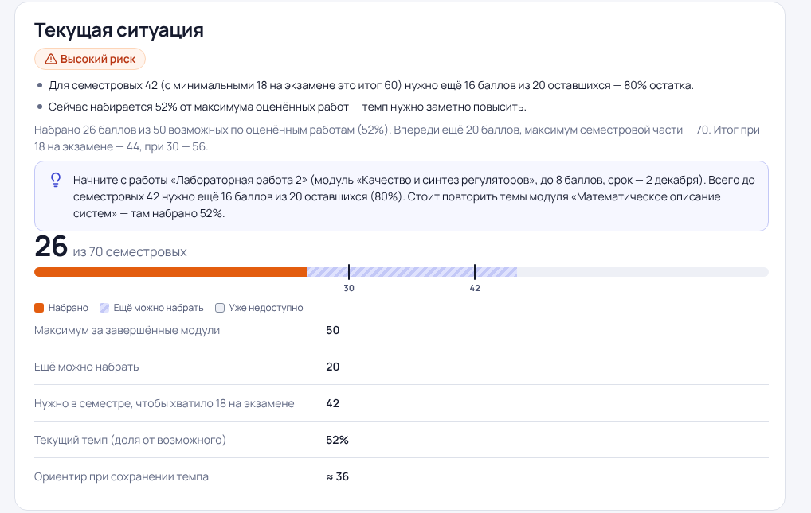
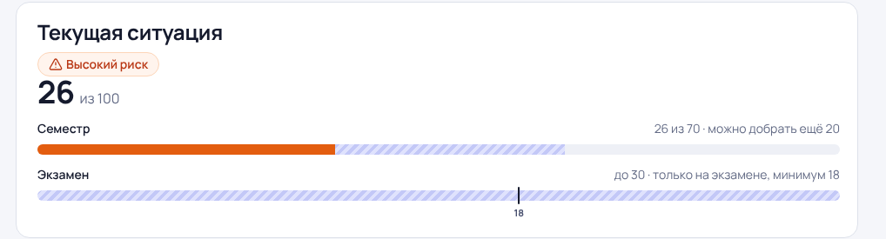
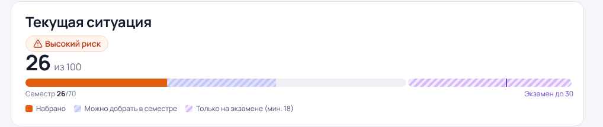
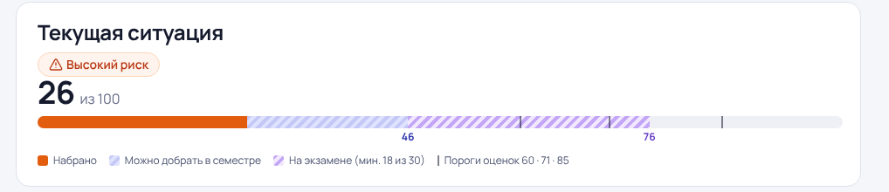
8cbfa97): много текста,
шкала только семестровых 70 баллов, таблица расчёта — информативно, но тяжело читать. Версия 2 (2ea1f3f): тексты
убраны, но семестр и экзамен — две отдельные шкалы (автор: «нужно… на одной шкале»). Версия 3 (146ab17):
одна шкала, но экзамен — фиксированный участок 70–100, хотя в семестре можно набрать только до 46; между ними
пустота. Версия 4 (e66a854, итог): единая ось — набрано 26 → можно добрать в семестре до 46 → без разрыва
экзамен до 76; отметки оценок 60/71/85 и подписи потолков.
Выводы. Автоматические тесты не находят перегруженность и нелогичность — их находит человек. Две неудачные попытки со шкалой закончились, когда автор разобрал её на числах одной дисциплины: конкретный пример снимает неоднозначность лучше описания. После каждой итерации ИИ прогонял все 224 теста, 277 браузерных проверок и smoke, поэтому правки интерфейса не сломали уже работающее.
| Показатель | Значение | Как получено |
|---|---|---|
| Промпты автора | 4 в ChatGPT (подготовка ТЗ) + стартовый промпт + 7 сообщений с правками | ai-log/00a_…, 07_user_feedback.md |
| Документы для агентов | ТЗ v2 ≈ 62 тыс. знаков (20 разделов); 8 ролей ≈ 20 тыс. знаков; 6 промптов субагентам ≈ 35,7 тыс. знаков | docs/source/, ai-log/ |
| Агентов | 7: координатор и 6 субагентов (роли 01, 03, 04, 05, 06, 07); роль 02 выполнял координатор | журнал |
| Коммиты | 12: с 21.11 22:15 по 22.11 | git log |
| Backend | Python 6 002 строки (домен аналитики 2 602), тесты 2 453, миграции 489 | git ls-files … \| xargs wc -l |
| Frontend | TSX 5 552, TS 1 651, CSS 3 872, e2e 775 строк | git ls-files … \| xargs wc -l |
| Данные сида | 4 JSON-файла, 4 804 строки: учебный план, демо-баллы, 142 материала, учебная структура | backend/app/seed/data/ |
| Модель данных | 24 таблицы | models.py, миграция |
| Автотесты backend | 224 (148 домен + 26 API и сценарии + 50 QA), все проходят | pytest -q |
| Браузерные проверки | 277 (QA, 4 ширины) + smoke 25 экранов × 2 ширины | frontend/e2e/ |
| Скриншоты | 46 итоговых + 87 QA | docs/screenshots/ |
| Учебный план и материалы | 14 дисциплин, 63 темы; 142 проверенные ссылки, материалы у 63 тем из 63 | curriculum.json, learning-resources.md |
| Документация | 18 md-файлов в docs/ (≈ 3 900 строк), 29 примеров ответов API, журнал из 15 этапов |
docs/ |
| Docker-образ | ≈ 300 МБ, процесс не от root | docker images |
Все скриншоты сняты автоматически скриптом frontend/e2e/smoke.py на чистой БД с демо-датой 23.11.2026. Мобильные —
ширина 360 px с плотностью 2×, десктопные — 1280 px. Полный набор — в screenshots/. В PDF показаны
фрагменты.
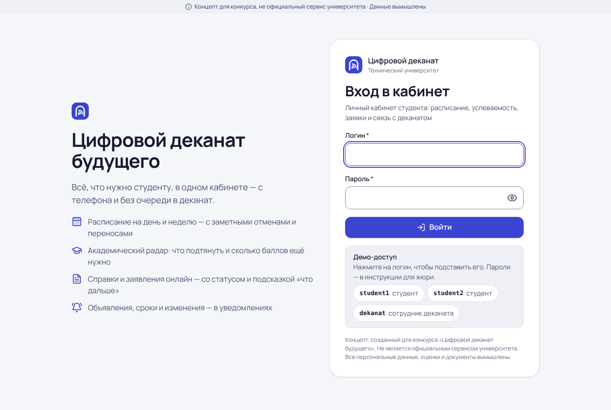
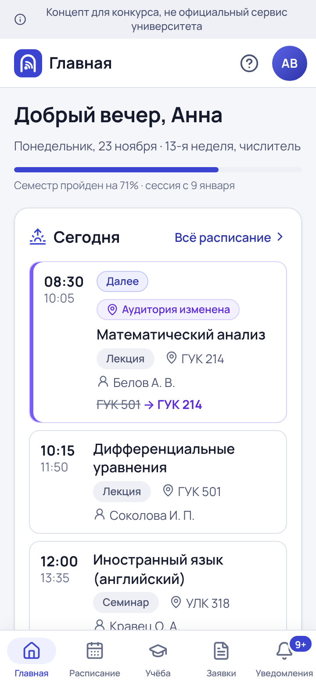
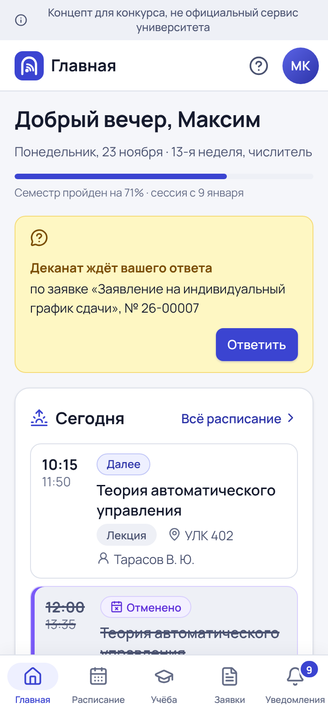
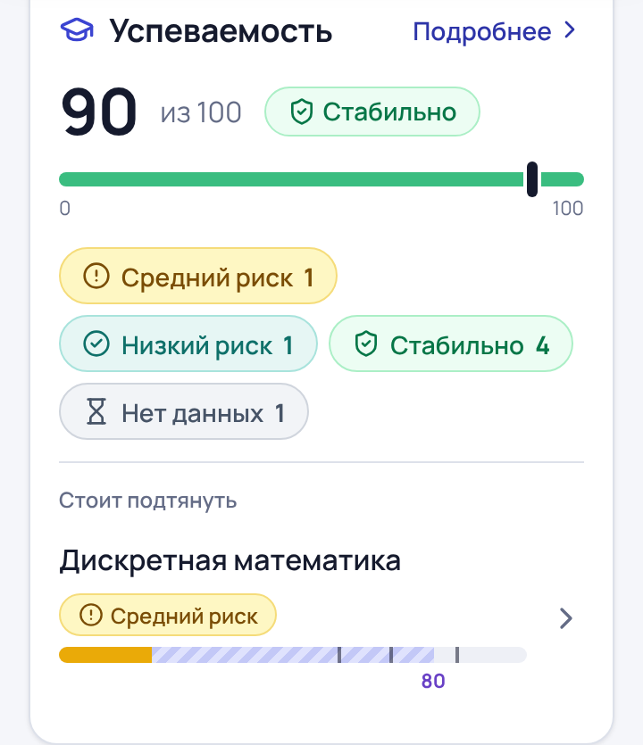
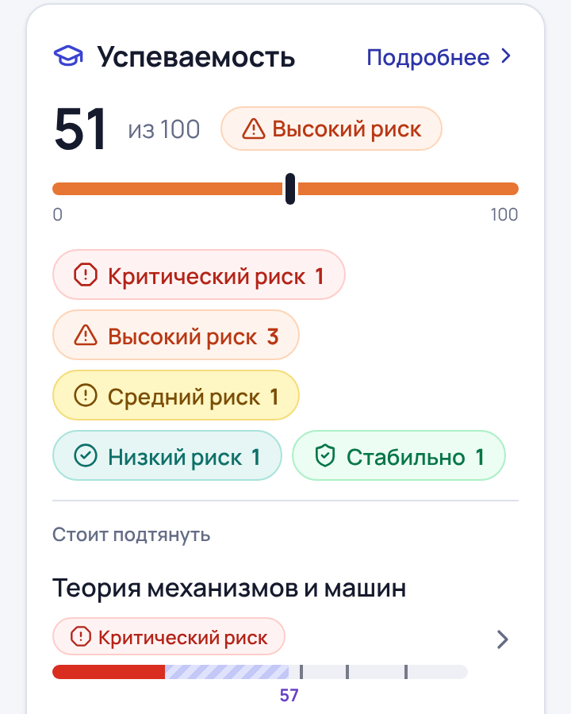
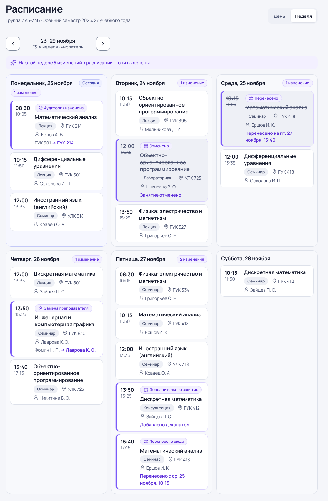
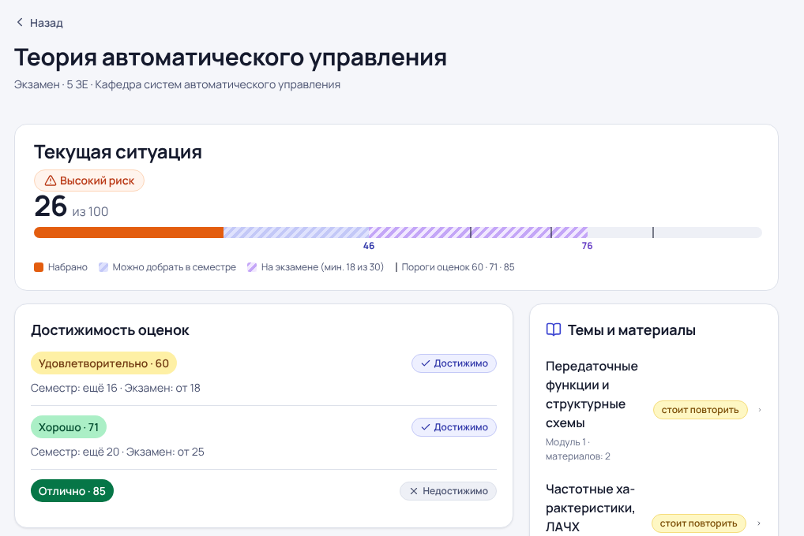
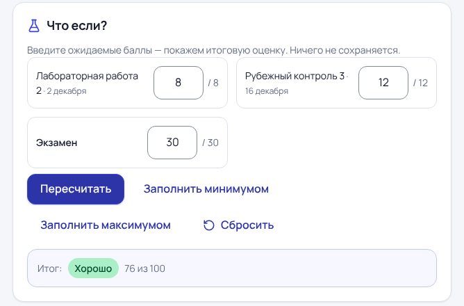
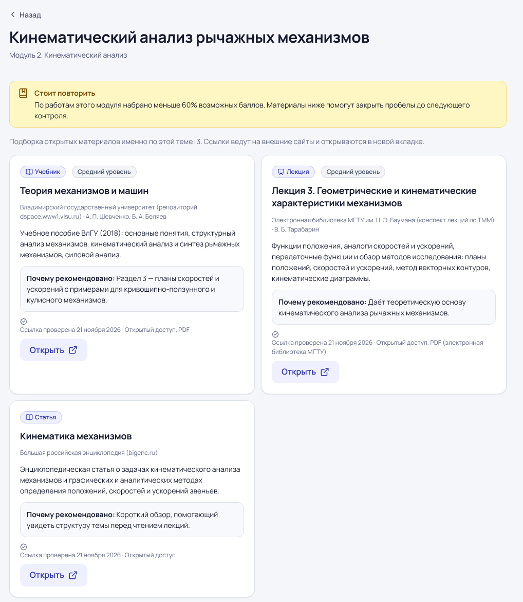
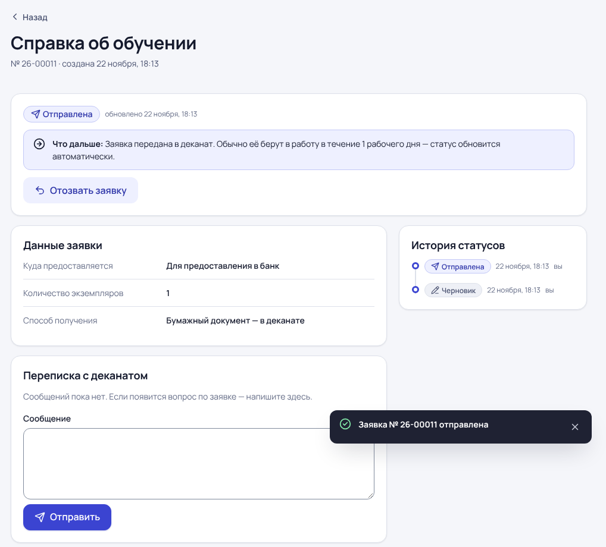
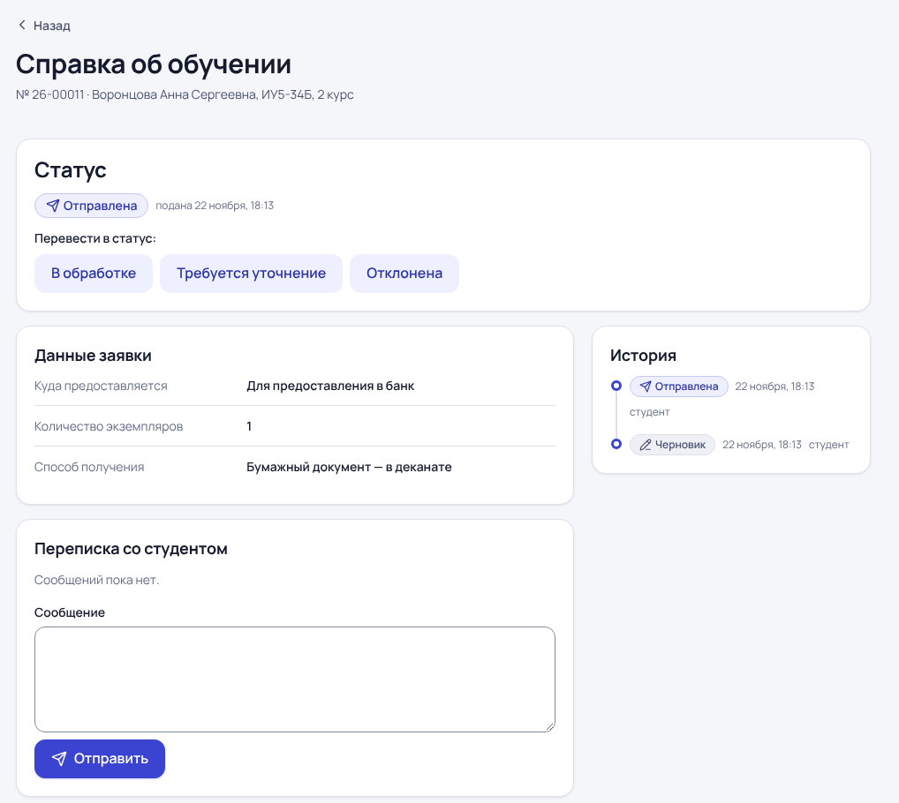
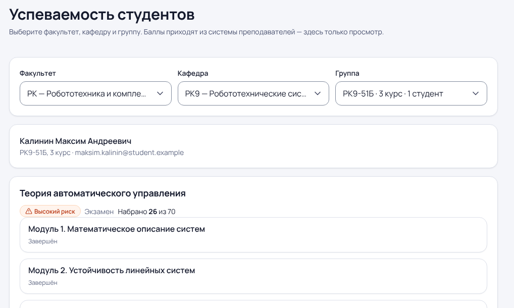
| Файл | Что внутри |
|---|---|
00a_chatgpt_spec_prompts.md |
4 промпта автора в ChatGPT: от условий конкурса к ТЗ, ролям и стартовому промпту |
00_initial_prompt.txt |
стартовый промпт автора координатору |
process-log.md |
журнал координатора: этапы 0–14, решения, ошибки и исправления |
01_agent04_analytics_prompt.md / _report.md |
аналитика: промпт; отчёт и проверка координатором |
02_agent05_resources_prompt.md / _report.md |
материалы: промпт; отчёт и проверка |
03_agent01_product_prompt.md / _report.md |
продукт и UX: промпт; акт приёмки по файлам |
04_agent03_frontend_prompt.md / _report.md |
frontend: промпт; акт приёмки по файлам |
05_agent06_qa_prompt.md / _report.md |
задание независимому QA-агенту; итог |
06_agent07_docs_prompt.md / _report.md |
задание агенту-документатору; итог |
07_user_feedback.md |
все правки автора по ходу разработки и разбор ошибок ИИ |
source/ |
ТЗ v2 и 8 ролей агентов, подготовленные автором в ChatGPT |
report-build/ |
исходник PDF: build_pdf.py, фрагменты скриншотов (в том числе из истории git), шрифт Manrope (OFL) |